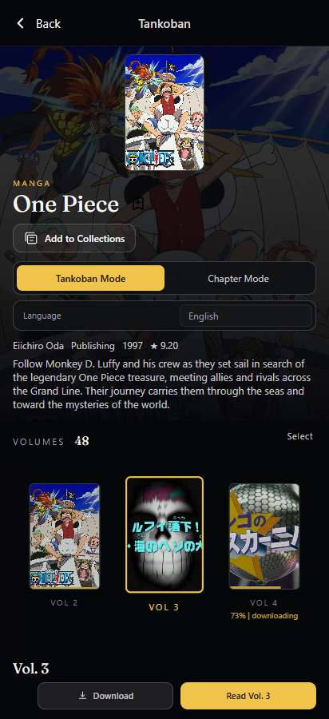
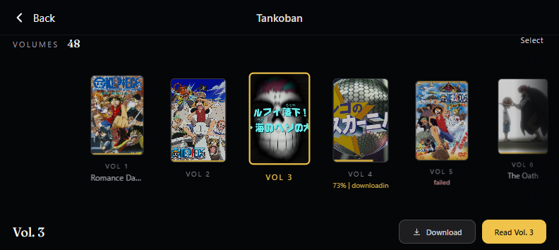

Original: fitted cover-flow
Preserves the centred 110% cover, scale falloff and existing controls, shrinking the books when available height is limited.

Two local, interactive HTML studies of the same approved volume flow. The enlarged, centred volume and neighbour-to-centre interaction are preserved. The second study changes only the short-landscape vertical space allocation for a scrollable gallery.
Images are actual titled local One Piece project assets, not manga volume jacket files. The series, volume count, source states and captions are illustrative mock data. Dimensions are provisional.
Preserves the centred 110% cover, scale falloff and existing controls, shrinking the books when available height is limited.

Preserves the same visual grammar; at 792×354 only, reserves room for readable covers and lets the original series page scroll.

Inspection evidence: FIDELITY.md, headless geometry review, REPORT.json. Preview-only controls make no backend calls. No Colosseum repository or Android device was modified.